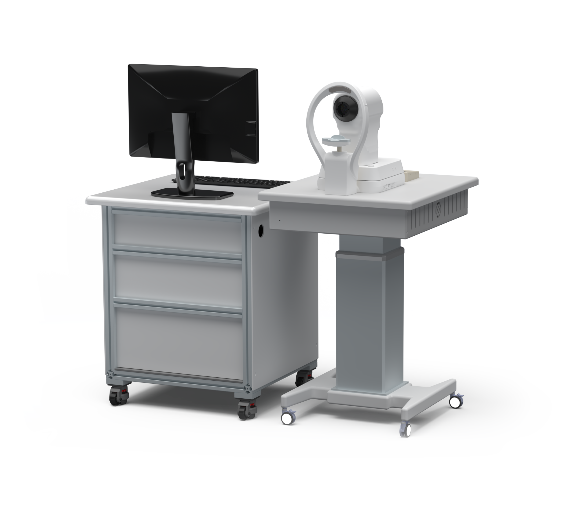
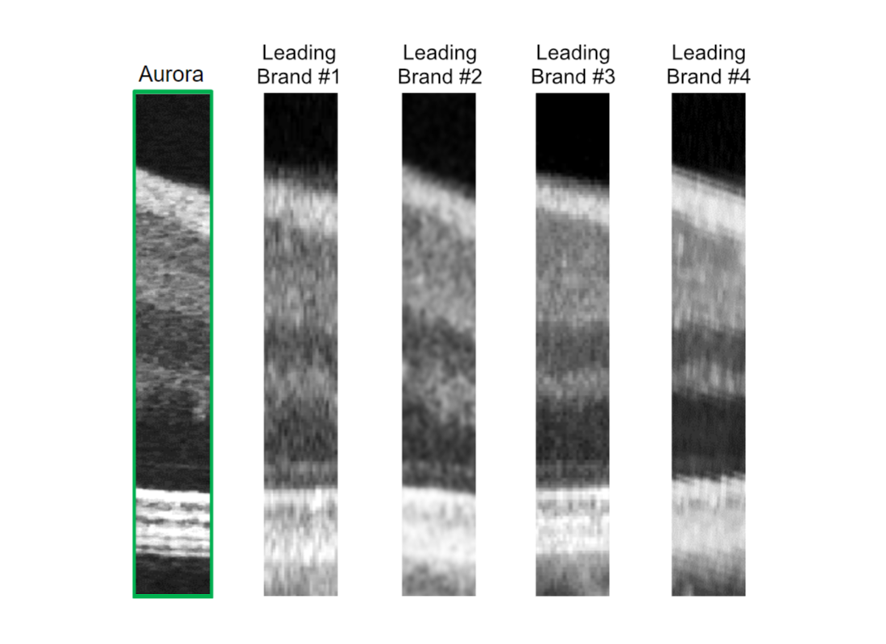
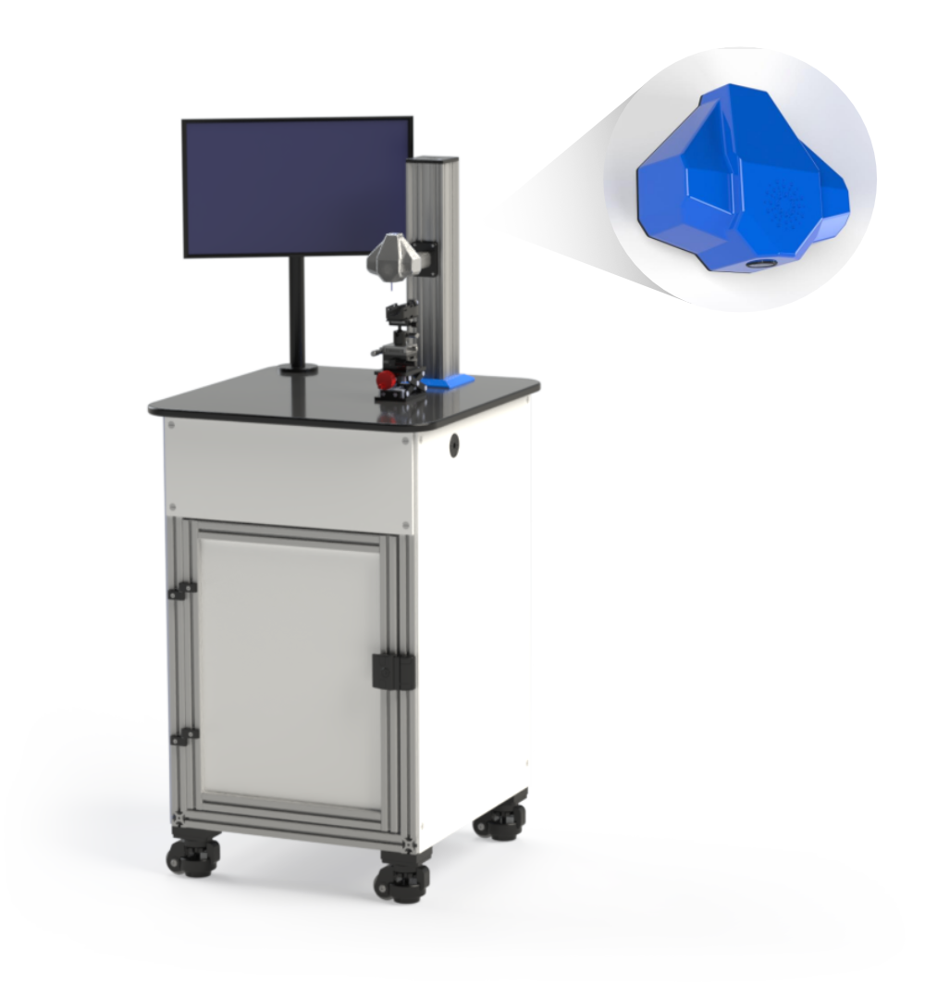
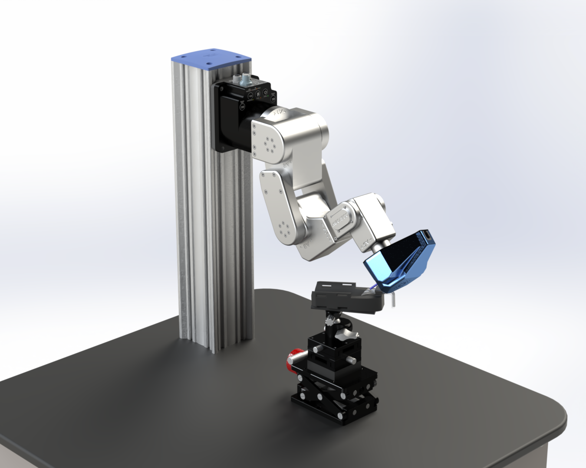
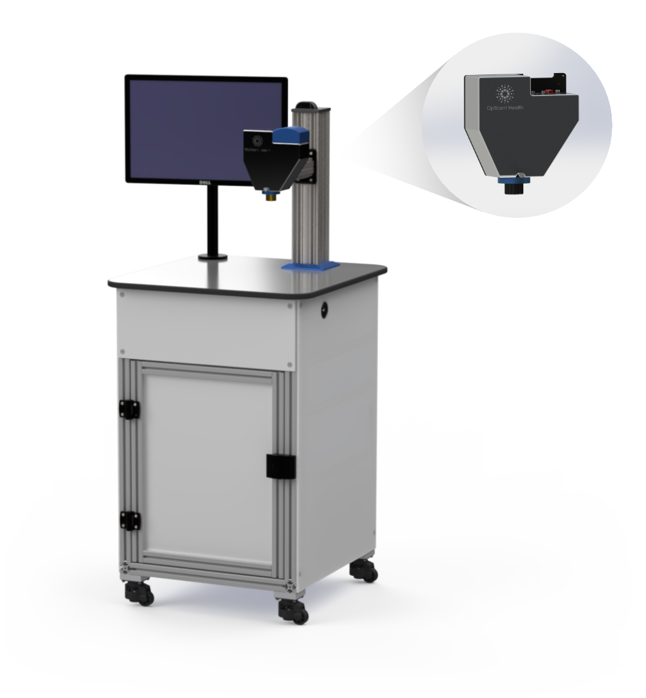
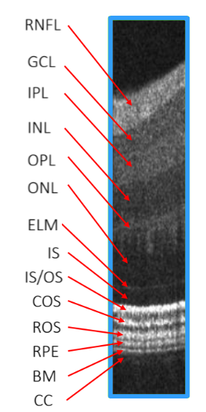
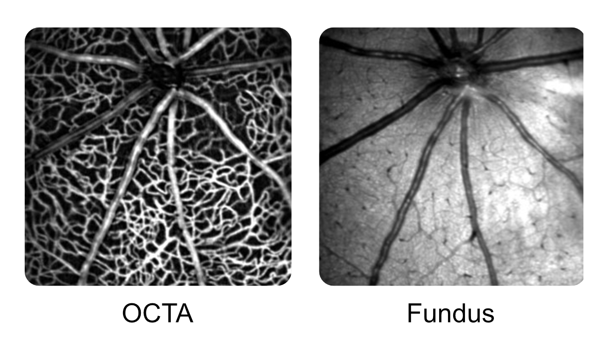

Aurora X4
Meet Human Clinical Research Excellency.
The Aurora X4 research system is a free-standing OCT imaging platform that offers a full complement of hardware and software for the imaging of the human eye in a clinical setting. Our instrument includes pupil monitoring and a NIR scanning laser ophthalmoscope for faster patient alignment and imaging.

Aurora Versus Competing OCTs
It's not even close.
When it comes to axial resolution, the Aurora X4 delivers clarity that standard commercial OCT systems simply cannot match. While other leading brands struggle to capture fine microstructural details, our advanced visible-light allows researchers to visualize distinct layers with absolute precision.


Adaptable Workflow
Intuitive Software
Our software ecosystem is designed to be highly intuitive, streamlining your entire research process from start to finish. To ensure maximum performance and ease of use, we provide two dedicated applications: one optimized for seamless image acquisition, and another built specifically for advanced post-processing and analysis.
Aurora X4
Technical Specifications
Aurora X4
Key Capabilities
- Ultra high resolution anatomical imaging
- Customizable scanning protocols
- Inner/outer retinal sub layer delineation
- High definition scan via speckle reduction
- Fibergraphy (OCTF) for retinal ganglion analysis
- Pupil monitoring and NIR fundus camera
- Inner retinal oximetry
- 3D vis-OCT data reconstruction/analysis
HaloC 375
Revolutionizing Anterior Segment Imaging.
The HaloC 375 research system is a free-standing vis-OCT imaging platform for imaging the anterior segment of the eyes in small animals. The optical design provides for the addition of multiple modules for specific applications, higher resolution lens assembly for microscopic imaging, or standard lens assembly for a balance between field of view, imaging depth, and lateral resolution.


HaloC 375
Configurable Imaging
The HaloC 375 is compatible with custom-made assemblies and robotic arms as well. Transform your imaging and our product with any free-form configuration you can think of.
The adjacent example showcases the use of a robotic arm in tandem with the HaloC 375 for free-form imaging. Please note, we do not provide such assemblies.
Halo Series Comparison
Varying applications, same ultra high resolution.
Both models of our small animal imaging system have their own applications and strengths. What's shared between them, however, is the vis-OCT technology that powers us and sets us apart.
| Feature | Halo 375 | HaloC 375 |
|---|---|---|
| Ultra high resolution anatomical imaging | ||
| Vis-OCT imaging technology | ||
| OCT angiography (OCT-A) | ||
| Inner/outer retinal sub-layer delineation | ||
| Fibergraphy (OCTF) for retinal ganglion cell axon analysis | ||
| Inner retinal oximetry | ||
| Optional multicolor confocal scanning laser ophthalmoscope (cSLO) | ||
| Complete anterior segment imaging | ||
| Multiple lens assemblies for varying applications | ||
| Free-form imaging with optional robotic arm | ||
| Outflow pathway imaging (collector channels/Schlemm's canal) | ||
| Corneal imaging |
Halo 375
Redefining Retinal Imaging.
The Halo 375 research system is a free-standing vis-OCT and cSLO imaging platform for retinal imaging in small animals. The optical design provides for the addition of multiple modules for specific applications, including a corneal imaging module and multiple choices of excitation lasers. Halo 375 OCT can be configured to provide up to two fluorescence channels in cSLO.

The Clearest Anatomical Resolution
Image like never before.
Powered by our best-in-class spectrometers, the Halo 375 provides an unmatched anatomical resolution for retinal imaging. Its visible-light OCT technology brings out subtle contrasts in both inner and outer retinal layers, revealing structures that conventional systems often miss.
Combined with advanced capabilities like angiography, fibergraphy, and inner-retinal oximetry, the Halo 375 gives researchers a richly detailed view of the eye.


Halo 375
The Finest Microvasculature Detail
The Halo series devices feature the highest resolution imaging, powered by vis-OCT.
As pictured, the left image presents an en-face vis-OCT scan whereas the right image pictures a vis-OCTA angiographical scan. Both provide the finest retinal microvasculature detail in small animals - with this example using a mouse retina.